Cada etapa tem um ou mais checkpoints (unidades de implementação) — quando há vários, o card mostra o que cada um entregou. Este mapa traduz o estado oficial em linguagem humana; ele acompanha, não é a fonte da verdade.
Montou a base de toda a spec e a "linha de integração" — o tronco sobre o qual todas as etapas seguintes se empilham. Fixou a topologia canônica (um único merge no fim) e o vocabulário que usamos até hoje.
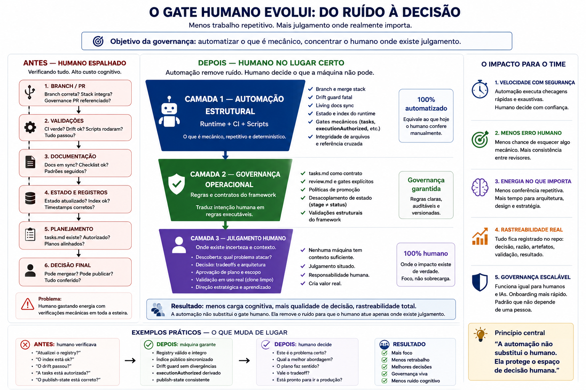
Fez com que as regras do framework possam ser geradas e conferidas de forma confiável, com a revisão virando um artefato e a "disclosure" derivada automaticamente.
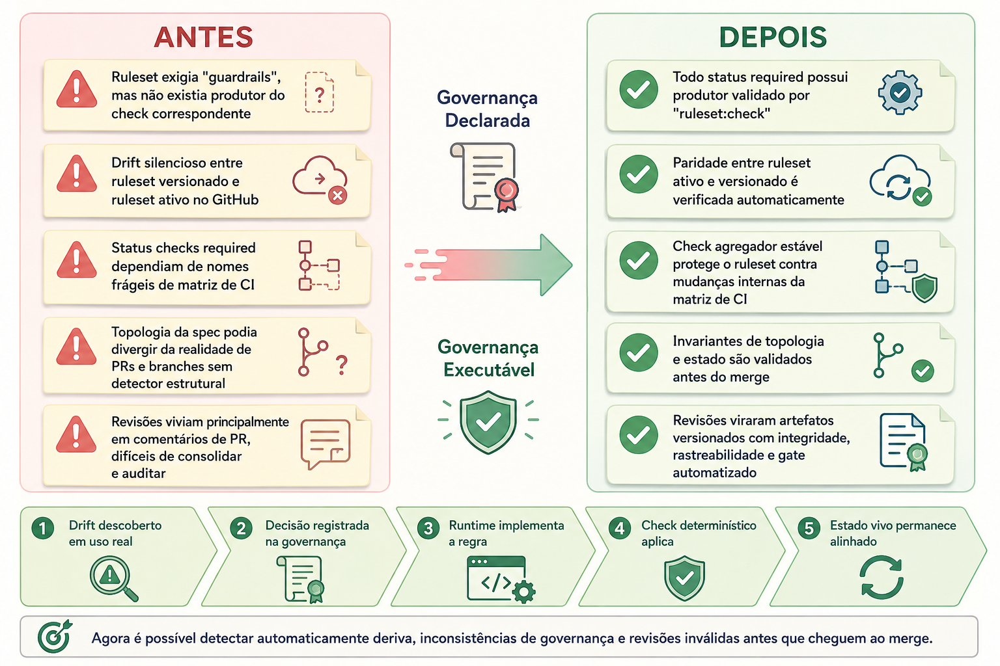
Passou a guardar o conhecimento como uma rede navegável de ideias e capturou as primeiras "percepções" (Insights) que orientam decisões, junto com o núcleo do grafo.
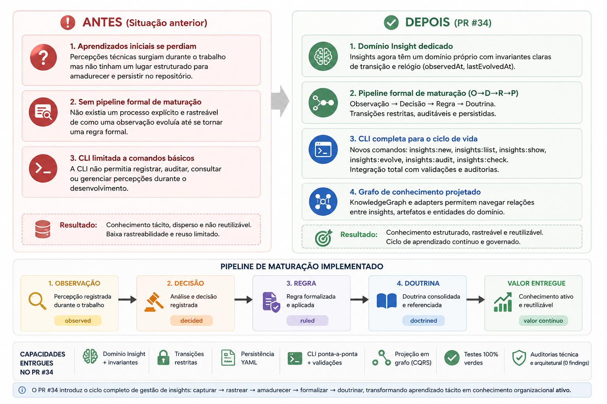
Reorganizou a linha de comando: adicionar um comando passou a custar uma linha, e a
ajuda (help) passou a se gerar sozinha. Dissolveu a "costura" antiga entre
engine.mjs e args.mjs.
src/.
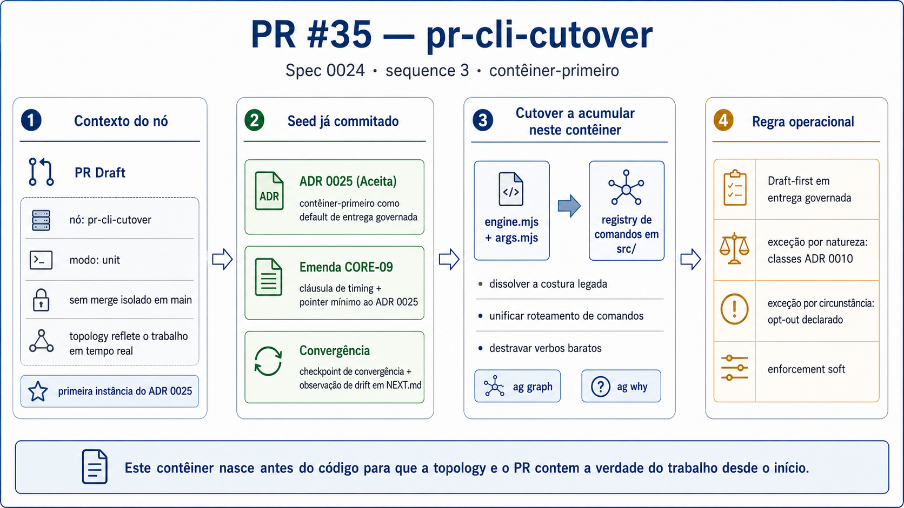
Primeira peça da Continuidade Operacional: o reconcile:check e o contrato
de autoridade, que conferem se o que o framework projeta bate com o estado real.
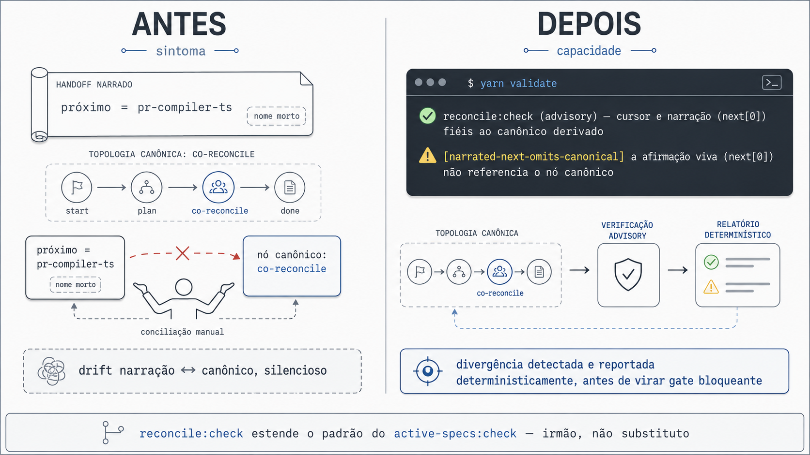
Deu forma tipada e rastreável ao conhecimento (incluindo como ele pode ser falsificado) e organizou os "ledgers" de runtime — os registros operacionais do framework.
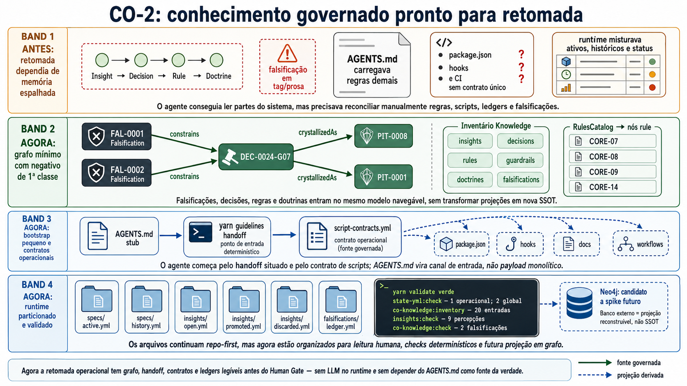
Modernizou o motor que compila as regras (de um monólito para TS/src) e fez
o bootstrap/registry virar a fronteira operacional; a CLI antiga virou uma camada de
compatibilidade.
/cli vira wrapper.
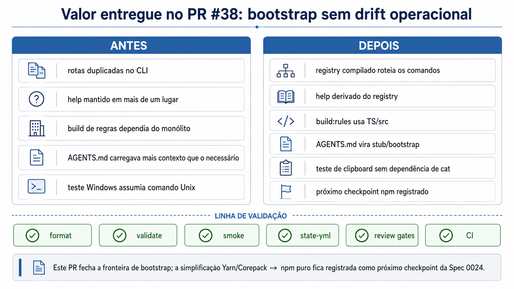
Simplificou a caixa de ferramentas para um único gerenciador (npm puro), unificando script-contracts, hooks, CI, templates e docs num runner só. Consumidores seguem livres para usar outros gerenciadores.
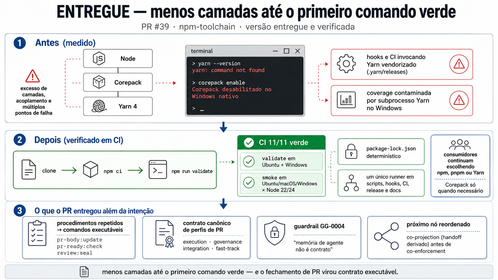
Fez o repositório se explicar para uma sessão nova: o handoff derivado, o briefing governado de reviews e o contrato de carga fazem quem chega entender onde está sem ler os bastidores.
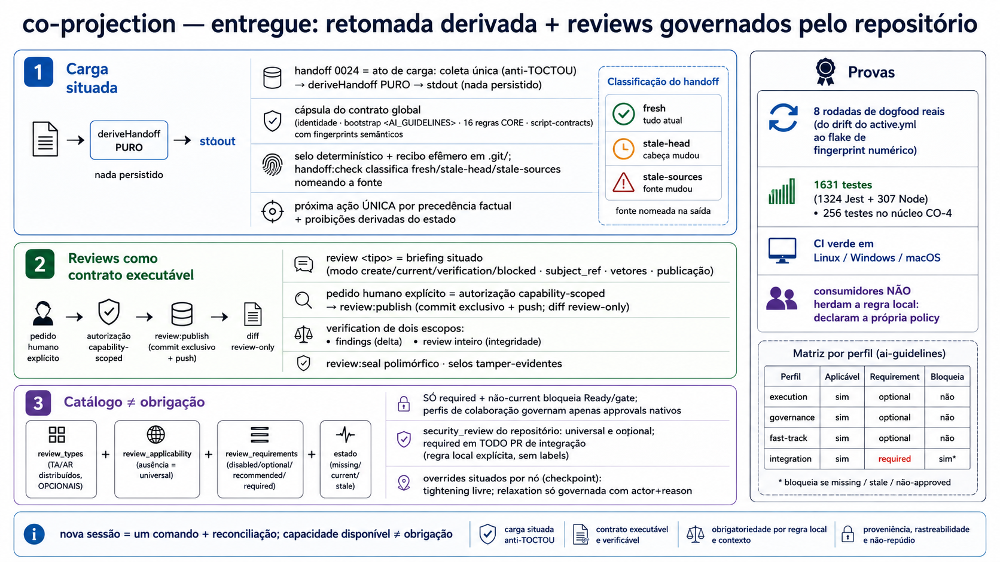
Ligou "o que foi declarado" a "o que é cobrado": o EnforcementBinding faz um nó de
conhecimento virar uma regra que age, e o knowledge:compile reusa o
compilador de regras.
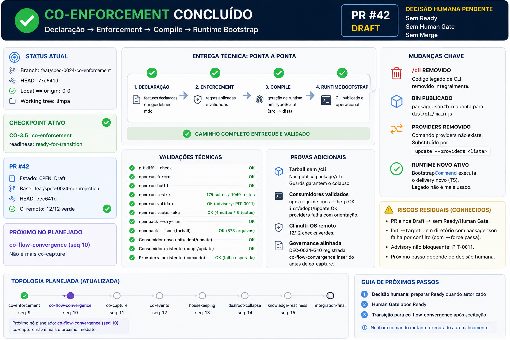
Uniu o fluxo de trabalho numa experiência só (modelo canônico com invariantes e jornadas): CLI pública autoexplicável, wizard guiado e um site/simulador fiel ao que acontece de verdade. Recorte CO-10.1..CO-10.7, aprovado no Human Gate em 2026-06-21.
npx ai-guidelines detecta o
contexto e guia sem decorar comandos.
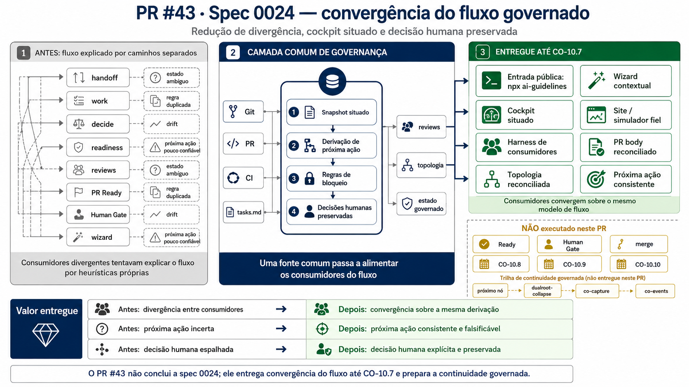
Preparar o framework para detectar, explicar e reparar desencontros (drift) em linguagem humana — sem exigir que você conheça os arquivos internos. Começou pelo primeiro reparo seguro de verdade.
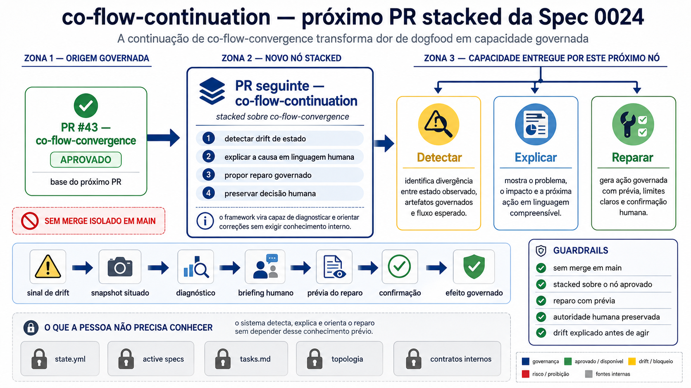
Colapsar as duas pastas-raiz transitórias (.ai-guidelines /
.specify) numa estrutura única, antes de automatizar captura e eventos.
Registrar o que ainda está "em trânsito" e dar a ele um ciclo de vida claro; dissolver as anotações soltas de "próximo passo" (NEXT.md).
Tornar o laço contínuo: o framework reage sozinho nos momentos-chave (commit, push, retomada…), mantendo o repo sempre pronto. É aqui que entra o candidato "preparar entrega".
Limpeza ortogonal: tirar classificações antigas, sincronizar AGENTS, banir conceitos obsoletos e arrumar a documentação técnica.
Garantir que o grafo de conhecimento esteja completo e saudável antes de fechar o projeto, com revisão assistida por IA mas decisão humana.
A homologação final e o único momento de merge em main: tudo o que foi empilhado aterrissa de uma vez.